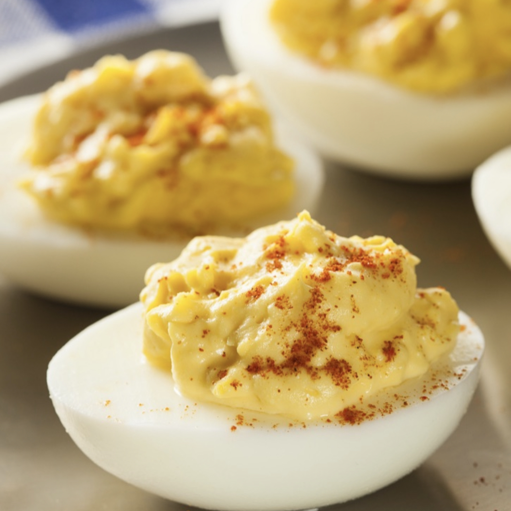

Deviled Eggs

Horseradish sauce and sweet relish sets these deviled eggs apart from the rest!
- 6 eggs
- ¼ cup mayonnaise
- 2 tablespoons finely chopped onion
- 3 tablespoons sweet pickle relish
- 1 tablespoon prepared horseradish
- 1 tablespoon prepared mustard
- paprika, for garnish
- salt and pepper to taste
- Place eggs in a medium saucepan and cover with cold water. Bring water to a boil and immediately remove from heat. Cover and let eggs stand in hot water for 10 to 12 minutes. Remove from hot water, cool, peel and cut lengthwise.
- Remove yolks from eggs. In a medium bowl, mash the yolks and mix together with mayonnaise, onion, sweet pickle relish, horseradish and mustard.
- With a fork or pastry bag, fill the egg halves with the yolk mixture. Garnish with paprika, salt and pepper. Chill until serving.